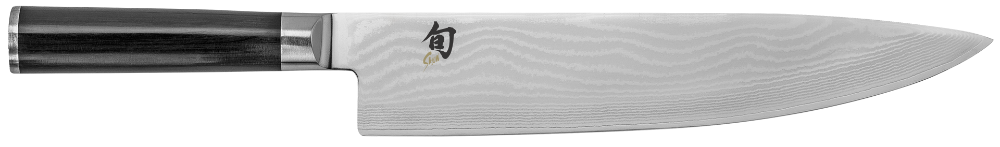

1: Offer a variety of easy home cooking recipes
2: Offer a selection of products and tools that I endorse
3: Support and platform other figures in the culinary communityThe site I chose to model mine after is the Serious Eats site. Serious Eats is a website that provides not only delicious recipes but, also offers restaurant reviews and equipment recommendations. I like the site not only for its content but also its ease of use and simple style.
The "Home page" will contain a cascading bar that contains links to the "recipes page", the "about page" the "equipment page" and the "connect" page. In addition to these links and bars there will also be clickable pictures that link to the pages as well as non clickable images and a brief description of the site.
The "Recipes Page" will be able to be navigated to from the "Home Page". The recipes page will contain a hyperlinked title of each recipe a short description of them and finally a clickable picture that, along with the title will navigate the user to the recipe.
The "Equipment page" will contain links and images to off site places to purchase products that I have endorsed through affiliate links
The "Connect page" will serve as a page that provides clickable pictures of other endorsed content creators that link to either their personal sites or social media sites as well as hyperlinked text for personal emails, twitter handles, and facebook groups or websites.
The "About page" will contain personal social media and email links for myself as well as a brief description of the purpose and story behind my culinary career and the website itself
The target audience of my site is best described anyone who is slightly past a beginner level of cook but not neccesarily an intermediate(recipes would be ranked in difficulty.) One of the main goals of the site is to provide a plpace where potentially more in depth information than is generally available on a "standard" recipe site but explained in a very palatable way. In essence the target audience is novice home cooks and industry veterans alike with options, reccomendations, and recipes for all skill levels.